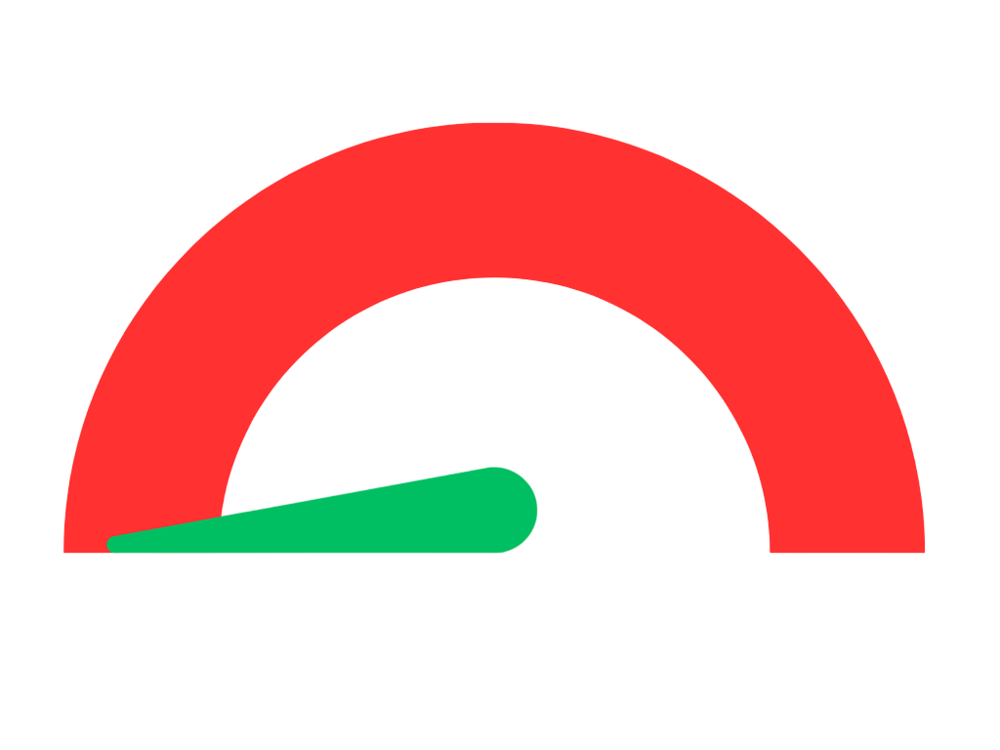

Constituency:Chandni Chowk Party:BJP Name Enrolled as Voter in: 01 Chandani Chowk,at Serial no 659 in Part no 21 Self Profession:Business, Social Public life Assests and Liabilities Assets: Rs 11,70,39,798 ~11 Crore+ Liabilities:Rs 6,06,45,586.77 ~6 Crore+ Education Details Category: Graduate Professional LLB from Delhi University 1986, B.A From Ramjas College Delhi, in 1983 Campaign Expenditure:Rs 56,26,230 ~56 Lacs Spouse Profession: Business
Criminal Cases:0